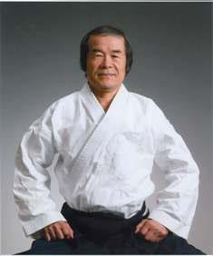

Aikido Kokikai of Frederick County, Maryland
Aikido Kokikai of Frederick County, MD has provided classes in the art of Kokikai Aikido
to the Frederick County community and surroundings since 1997.
We are an accredited member of the Aikido Kokikai Federation, USA.
Schedule
Classes are held Saturday mornings 9:00-11:45 am year round except for the month of August.
Class registration is through the Frederick County Parks and Recreation Department
Both beginner and intermediate classes are offered.
Location
Classes are held in the Deer Crossing Recreation Center in New Market, Maryland
For more information, contact Abhijit by e-mail or phone
Instructors
Abhijit Dasgupta is a fourth degree black belt and certified instructor in Kokikai Aikido, and a direct student of Sensei Maruyama, founder of Kokikai Aikido. He has been practicing aikido since 1994, starting when he was in graduate school at the University of Washington. He spent 6 years at Aikido Kokikai Seattle under Sensei Jonathan Bannister. Since then, Abhijit was a member of Ellicott City Aikido with Sensei Brian Kantsiper, then Aikido Kokikai of South New Jersey with Sensei Dennis Embert for three years before moving to Germantown, Maryland. He joined Aikido Kokikai of Frederick County, Maryland as Chief Instructor in 2010. He occasionally blogs about aikido and the martial arts. Professionally, Abhijit is a data science consultant for the National Institutes of Health and also works to build a startup healthcare-focused sensor company.
Tom Wildsmith is a second degree black belt and certified instructor in Kokikai Aikido. Tom started his aikido practice here at Aikido Kokikai of Frederick County, Maryland under the instruction of Sensei Bob McCann. Tom led the practice for several years after Sensei McCann moved from the area. He co-instructs all classes and leads the administration of the club. Professionally, Tom is an actuarial scientist at a major insurance company and currently serves in a leadership role for one of the professional societies in actuarial science.
Abhijit and Tom regularly attend national camps and seminars with Sensei Maruyama and other senior instructors in Kokikai Aikido
Aikido
Aikido is a primarily defensive martial art derived from aiki-jujitsu and founded by Sensei Morihei Ueshiba, or O-Sensei. The art developed in the 1940s in Japan. The central premise of aikido is to re-direct the energy of an attacker using circular movements to diffuse an attack and control the attacker, often resulting in either the attacker being thrown to the ground or pinned using a variety of joint locks.
Aikido was brought to Hawaii in the 1950s and then to the continental United States. It grew in the United States through the leadership of many high-ranking instructors who moved from Japan to the United States. Over the years many instructors branched out to form their own organizations and aikido styles, while maintaining connections with Japan.
Aikido in the United States benefited greatly from the rise of Steven Seagal in Hollywood. Seagal, a high-ranking aikido practitioner in his own right, brought the art to the silver screen in a series of movies.
Today, aikido is widely practiced in the United States and around the world, in YMCAs, clubs and formal dojos.
Kokikai Aikido
Kokikai Aikido was founded by Shuji Maruyama Sensei. Our practice is based on 4 basic principles:
- Keep One Point to Develop Calmness
- Relax Progressively
- Find Correct Posture in Everything
- Develop your Positive Mind
These principles guide our practice and provide a touchstone against which we can evaluate our practice.
Kokikai practice includes empty hand practice, defending against knife (tanto), sword (bokken) and staff (jo), and forms (kata) for sword and staff. Other aspects of Kokikai practice include Ki Meditation and Kiatsu (acupressure)
Shuji Maruyama Sensei

Maruyama Sensei was a student of Ueshiba Sensei as a young man. He came to the United States in 1968 and established a presence in Phildelphia soon after. After teaching aikido in the United States for many years and founding Kokikai Aikido, he returned to Japan, but returns regularly to teach at national camps, advanced seminars and at several dojos around the United States.
A typical class
A typical class consists of gentle warm-ups and stretches, falling and rolling (ukemi) practice, Ki exercises and then technique practice.
Aikido movements often result in an attacker being thrown to the floor or pinned using joint locks. To enable safe and continued practice, we practice falling and rolling safely. These can seem intimidating at first to the beginner, since we have been conditioned to be afraid of falling. However, if you look at a toddler, there is no fear of falling. Learning the techniques to safely fall and roll will help you overcome this conditioned fear. In fact, when you start aikido, learning to fall safely is the most valuable and applicable skill you learn. It has certainly saved me (Abhijit) on the road many times.
Ki exercises can be thought of as elements of aikido movement that have been extracted out and are practiced separately as building blocks of aikido technique. We usually practice these to a count of five, and use this opportunity to understand how to make these foundational elements more correct.
Technique practice usually starts with more basic movements from a particular attack to practice fundamentals, and then progresses to more involved techniques or particular applications. We practice as partners, taking turns attacking (as uke) and defending (as nage). We emphasize a relaxed flow that allows the defender to diffuse an attack, while maintaining the basic principles himself. This practice cannot really be described in words, and must be experienced kinesthetically to begin to understand and absorb it.
A note about the black belt
One of the most common questions we get is, how long does it take to get to black belt? There are many philosophic, and many tongue-in-cheek, answers to this question. However, we think that it is best not to focus on this question but to start your journey and learn. Even after many years of training, we (the instructors) are still learning.
The black belt is certainly a milestone in a martial artist’s path, but it is a beginning, not the end. To us, it signifies the end of the beginning part of our training, when one has a reasonable grasp of the fundamentals and is ready to move on to deeper understanding of the art. Some have compared the black belt to a Bachelor’s degree, where you know the basics pretty well but aren’t really an expert. We would strongly recommend that you focus not on the goal of a black belt but learn, absorb and understand the art through regular practice. Ranks and belts will come along the way.
Uniforms
Aikido is typically practiced using Judo gi. We find that a single weave Judo gi or a heavy Karate gi tends to be the most comfortable. Hakama, or divided skirts, are worn by black belt practitioners. Belts are colored by rank, from white (beginner) through orange, blue and brown, to black.
Beginners : When you are first starting aikido practice with us, we encourage you to wear long-sleeved clothes like long-sleeved t-shirts, sweatshirts without hoods and sweatpants. Jewellery like necklaces or dangling earrings are prohibited, and taking off all jewellery may be the most comfortable. Stone-less rings like some wedding bands and stud earrings may be acceptable; ask your instructor what he or she would allow on the mat. Please ensure that your clothing is clean and your nails are trimmed and filed. Cover any cuts you may have with band-aids or bandages, and let the instructor know if you have any active injuries; we can work around those.
Attitude
Aikido is a martial art. Though our practice is safe and relatively injury-free, the practice does have the potential to cause injury or harm to the practitioner if he is not careful. It requires attention and concentration to practice safely, absorb and understand. When you get on the mat, try and leave all other concerns off the mat and give your practice your undivided attention. This is your time, in your laboratory, to learn and practice this amazing martial art.
Local Kokikai dojos
Being in the Northeast, other Kokikai Aikido dojos are not hard to find. Dojos within an hours’ drive from us include
Old friends
Colleagues that Abhijit Sensei started practice with many years ago in Seattle continue to have successful dojos, albeit on the West Coast:
Learn more about Kokikai Aikido
Some of our colleagues have very informative websites about Kokikai Aikido.
Traveling?
Kokikai Aikido dojos span the globe, including not only Japan and the United States, but also Canada, Australia and Israel. You can find out where Kokikai Aikido dojos are worldwide at our affiliate directory.
Calendar
Our next session starts on September 10, 2016. Please register at Parks and Recreation Department.
Other Kokikai events
- Hanover Kokikai Aikido is hosting a seminar with several high ranking guest instructors on October 1, 2016
- MIT Kokikai will be hosting Maruyama Sensei November 4-6, 2016